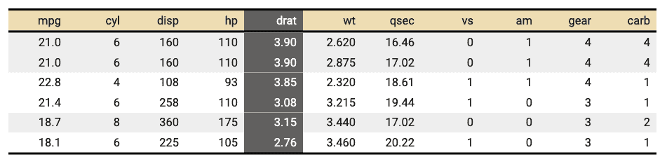
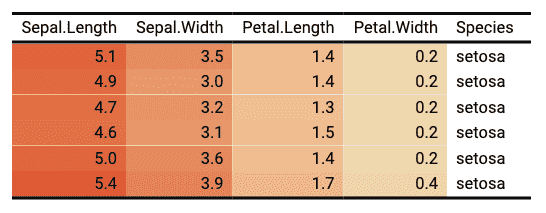

Change background color of selected rows and columns of a flextable. A function can be used instead of fixed colors.
When bg is a function, it is possible to color cells based on values
located in other columns, using hidden columns (those not used by
argument colkeys) is a common use case. The argument source
has to be used to define what are the columns to be used for the color
definition and the argument j has to be used to define where to apply
the colors and only accept values from colkeys.
bg(x, i = NULL, j = NULL, bg, part = "body", source = j)a flextable object
rows selection
columns selection
color to use as background color. If a function, function need to return a character vector of colors.
partname of the table (one of 'all', 'body', 'header', 'footer')
if bg is a function, source is specifying the dataset column to be used
as argument to bg. This is only useful if j is colored with values contained in
other columns.
Word does not allow you to apply transparency to table cells or paragraph shading.


ft_1 <- flextable(head(mtcars))
ft_1 <- bg(ft_1, bg = "wheat", part = "header")
ft_1 <- bg(ft_1, i = ~ qsec < 18, bg = "#EFEFEF", part = "body")
ft_1 <- bg(ft_1, j = "drat", bg = "#606060", part = "all")
ft_1 <- color(ft_1, j = "drat", color = "white", part = "all")
ft_1
#> a flextable object.
#> col_keys: `mpg`, `cyl`, `disp`, `hp`, `drat`, `wt`, `qsec`, `vs`, `am`, `gear`, `carb`
#> header has 1 row(s)
#> body has 6 row(s)
#> original dataset sample:
#> mpg cyl disp hp drat wt qsec vs am gear carb
#> Mazda RX4 21.0 6 160 110 3.90 2.620 16.46 0 1 4 4
#> Mazda RX4 Wag 21.0 6 160 110 3.90 2.875 17.02 0 1 4 4
#> Datsun 710 22.8 4 108 93 3.85 2.320 18.61 1 1 4 1
#> Hornet 4 Drive 21.4 6 258 110 3.08 3.215 19.44 1 0 3 1
#> Hornet Sportabout 18.7 8 360 175 3.15 3.440 17.02 0 0 3 2
if (require("scales")) {
ft_2 <- flextable(head(iris))
colourer <- col_numeric(
palette = c("wheat", "red"),
domain = c(0, 7)
)
ft_2 <- bg(ft_2,
j = c(
"Sepal.Length", "Sepal.Width",
"Petal.Length", "Petal.Width"
),
bg = colourer, part = "body"
)
ft_2
}
#> Loading required package: scales
#> a flextable object.
#> col_keys: `Sepal.Length`, `Sepal.Width`, `Petal.Length`, `Petal.Width`, `Species`
#> header has 1 row(s)
#> body has 6 row(s)
#> original dataset sample:
#> Sepal.Length Sepal.Width Petal.Length Petal.Width Species
#> 1 5.1 3.5 1.4 0.2 setosa
#> 2 4.9 3.0 1.4 0.2 setosa
#> 3 4.7 3.2 1.3 0.2 setosa
#> 4 4.6 3.1 1.5 0.2 setosa
#> 5 5.0 3.6 1.4 0.2 setosa